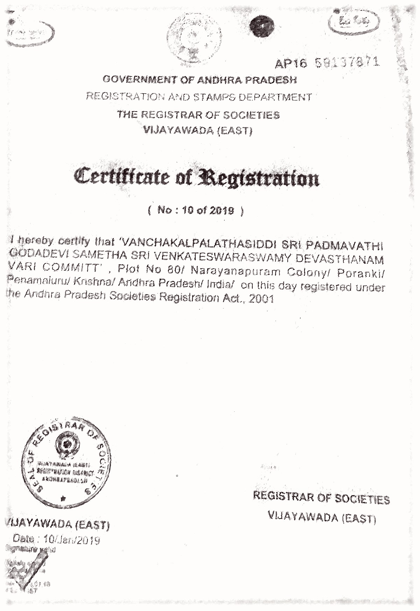

వాంఛాకల్పలతాసిద్ధి శ్రీ పద్మావతి, గోదాదేవి సమేత శ్రీ వేంకటేశ్వరస్వామి వారి దేవస్థాన కమిటీ
నారాయణపురం కాలనీ, పోరంకి, పెనమలూరు మండలం, కృష్ణాజిల్లా
రిజిష్టరు నెం. 10/2019

🔍 View full certificateసొసైటీ రిజిస్ట్రేషన్ సర్టిఫికేట్Certificate of Registration
| Registration No. | 10 of 2019 |
|---|---|
| Date of Registration | 10 January 2019 |
| Society Name | Vanchakalpalathasiddi Sri Padmavathi Godadevi Sametha Sri Venkateswaraswamy Devasthanam Vari Committee |
| Registered Under | Andhra Pradesh Societies Registration Act, 2001 (Section 3) |
| Category | Welfare Associations |
| Issued By | Registrar of Societies, Vijayawada (East) Registration & Stamps Department, Government of Andhra Pradesh |
| Registered Address | Narayanapuram Colony, Poranki, Penamaluru Mandal, Krishna District, Andhra Pradesh |
✔ Registered with the Registrar of Societies, Government of Andhra Pradesh
ధర్మకర్తలు · Trustees
శ్రీ లింగం రవీంద్రరావు
Sri Lingam Ravindra Rao
గౌరవ అధ్యక్షులు, ధర్మకర్తలుHonorary President & Trustee
శ్రీ లింగం తులసీప్రసాద్
Sri Lingam Tulasi Prasad
ధర్మకర్తలుTrustee
శ్రీ తుమ్మల శ్రీరాంబాబు
Sri Tummala Srirambabu
ధర్మకర్తలుTrustee
శ్రీ నాగళ్ల శ్రీధర్బాబు
Sri Nagalla Sridhar Babu
ధర్మకర్తలుTrustee
శ్రీ గుత్తా రామకృష్ణ
Sri Gutta Ramakrishna
కాలనీ అధ్యక్షులు, గౌరవ సభ్యులుColony President & Honorary Member
కార్యవర్గం · Office Bearers
శ్రీ పొట్లూరి రత్నాకరరావు
Sri Potluri Ratnakara Rao
అధ్యక్షులుPresident
శ్రీ ప్రత్తిపాటి వెంకటేశ్వరరావు
Sri Prathipati Venkateswara Rao
ఉపాధ్యక్షులుVice President
శ్రీ యావనమంద శివరామరాజు
Sri Yavanamanda Siva Ramaraju
కార్యదర్శిSecretary
శ్రీ మోటూరి శంకరరావు
Sri Moturi Shankara Rao
సంయుక్త కార్యదర్శిJoint Secretary
శ్రీ తుమ్మల గోపాలకృష్ణ
Sri Tummala Gopala Krishna
కోశాధికారిTreasurer
సభ్యులు · Committee Members
- 11శ్రీ ఈడ్పుగంటి లక్ష్మణరావుSri Edupuganti Lakshmana Rao
- 12శ్రీ బొమ్మదేవర రమేష్బాబుSri Bommadevara Ramesh Babu
- 13శ్రీమతి పత్రీ యమునSmt. Patri Yamuna
- 14శ్రీ తుమ్మల బోసుబాబుSri Tummala Bose Babu
- 15శ్రీ పోలవరపు వెంకటేశ్వరరావుSri Polavarapu Venkateswara Rao
- 16శ్రీ మాట్లపూడి రాజమన్నార్Sri Matlapudi Rajamannar
- 17శ్రీ కొల్లిపర వెంకట సత్యనారాయణSri Kollipara Venkata Satyanarayana
- 18శ్రీమతి నీరుకొండ పద్మభవానిSmt. Neerukonda Padma Bhavani
- 19శ్రీ వేములపల్లి వెంకట్రావుSri Vemulapalli Venkata Rao
- 20శ్రీ నాగుల రాజుSri Nagula Raju
- 21శ్రీ కొరివి వెంకటేశ్వరరావుSri Korivi Venkateswara Rao
- 22శ్రీ పాతూరి మురళీకృష్ణ ప్రసాద్Sri Paturi Murali Krishna Prasad
సదరు కమిటీ వారికి మీ యొక్క సహాయ సహకారములు మరియు మీ యొక్క తోడ్పాటును ఆలయ అభివృద్ధికి సహకరించవలసినదిగా కోరుచున్నాము. We humbly request your support and cooperation to the committee for the development of the temple.